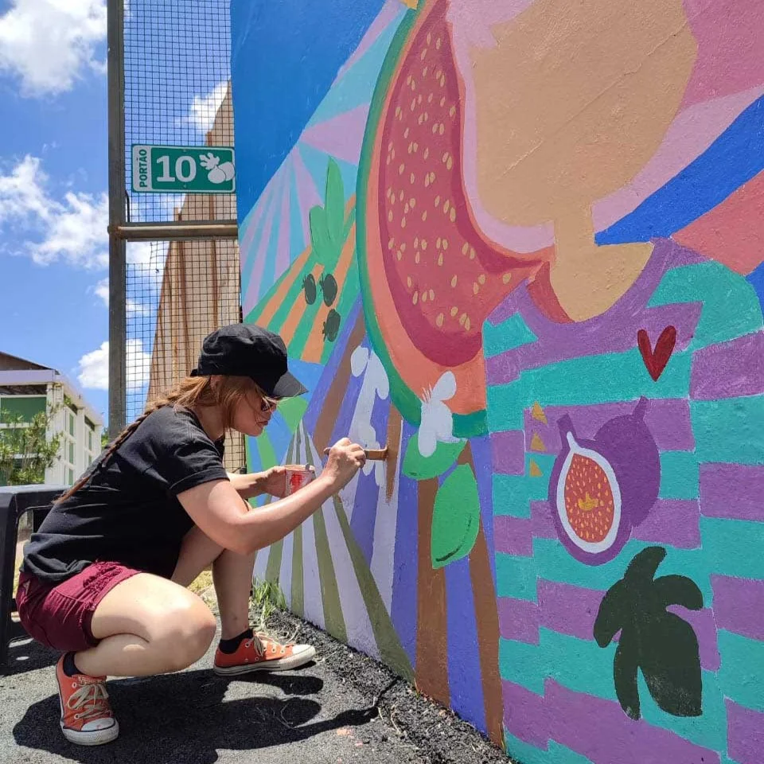
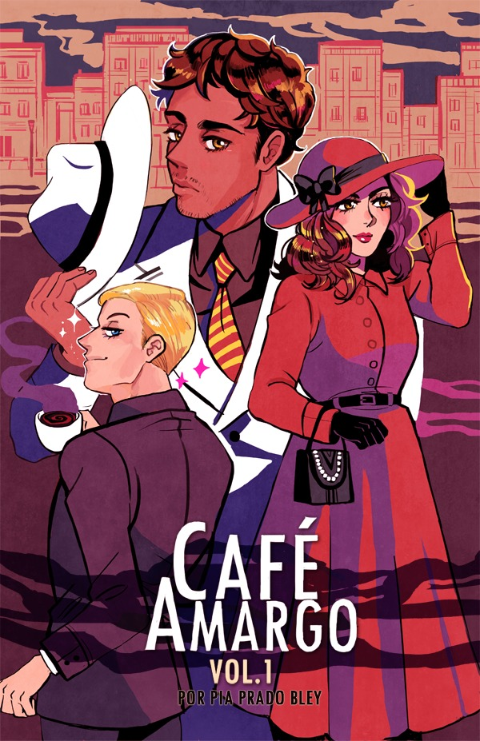

Nas ruas
Podemos ter muitos tipos diferentes de estilos como cartoon, HQ, realista entre outros. São expressões que evidenciam a crítica política e social nos muros das cidades brasileiras. Elas também servem como propaganda ou veículo de mensagens sociais e estéticas sobre algo que ocorre no país, ou no local, algo característico da cidade, algo inovador, etc.
No sudeste do Brasil surge ligada a grupos jovens e ao estilo hip-hop, predominantemente masculina e marginalizada.
Atualmente existe mais variedade e diversidade de participantes, mulheres, crianças e grupos de comunidades das próprias cidades ou bairros.

Mural da festa do figo pintado pela artista valinhense Itamiklau

Nos desenhos
Nos desenhos e quadrinhos as mulheres foram marginalizadas durante grande parte da produção e larga escala dos HQs, assim como no cinema e artes associadas. O apagamento foi gerado por mecanismos institucionais e comerciais das editoras, que direcionavam a contratação e a criação de conteúdo quase exclusivamente para o público e para profissionais masculinos.
Atualmente as mulheres ganham espaço e possuem grande produção literária e também nos Comics.